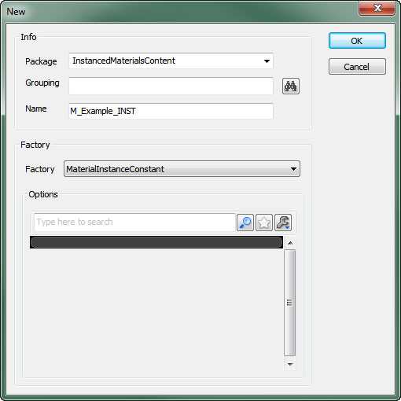
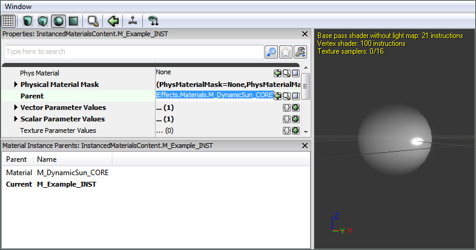
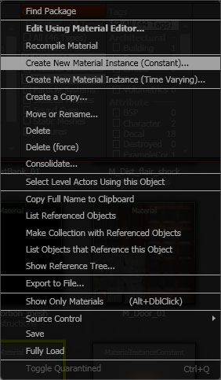
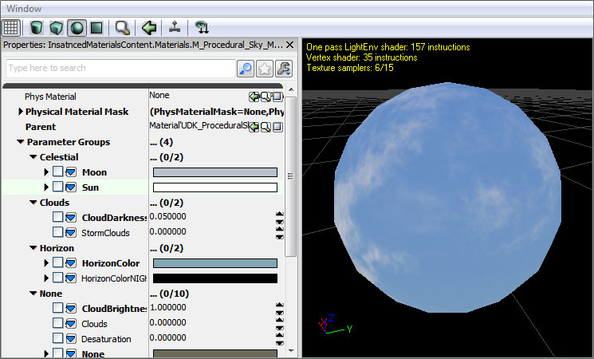
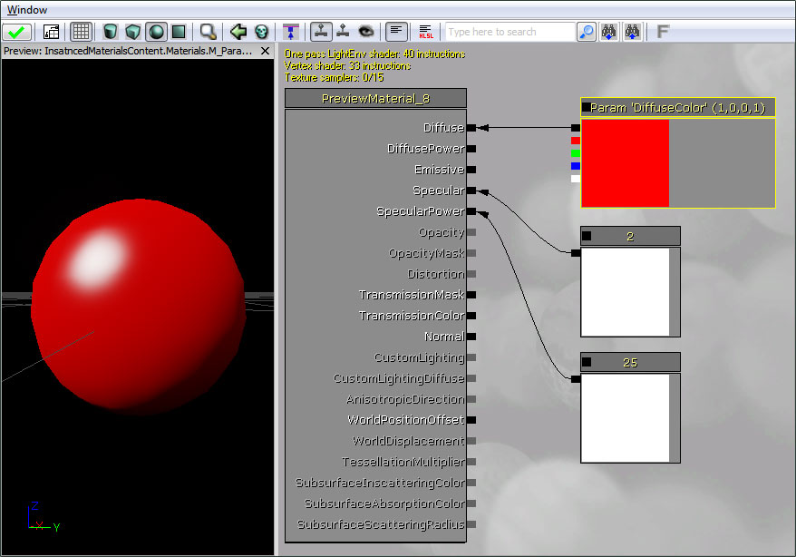

Instanced Materials
Overview
In Unreal Engine 3, material instancing may be used to change the appearance of a material without incurring an expensive recompilation of the material. General modification of the material cannot be supported without recompilation, so the instances are limited to changing the values of predefined material parameters. The parameters are statically defined in the compiled material by a unique name, type and default value. An instance of a material can dynamically provide new values for these parameters with very little expense.
To allow applying un-instanced materials to primitives, the abstract base class MaterialInterface is used. This class is an interface to both the expressions and parameter values of an applied material. The Material class is a subclass of MaterialInterface which defines the expressions and default parameter values. The Material Instance Constant and Material Instances Time Varying classes are subclasses of MaterialInterface with a parent MaterialInstance. These types both inherit their expressions and parameter values from their parent, optionally overriding or animating some of the parameter values.
A Material Instance Constant is a material instance that has explicitly defined parameter values while a Material Instances Time Varying is a material instance that can have its parameter values animated over time through the use of distribution curves.
Material Instances can then be edited using the Material Instance Editor. See the Material Instance Editor User Guide for more information.
Instancing a material in the editor
There are two main methods that can be used to create an instance of a material in the editor.
Click the new button in the Content Browser and set the Factory option in the New dialog to MaterialInstanceConstant (or MaterialInstanceTimeVarying depending on the type of instance you need).

Then assign the material to be instanced to the Parent property for the new material instance.

Right-click on the material you wish to instance and choose Create New Material Instance (Constant) (or Create New Material Insatnce (Time Varying) depending on the type of instance you need).

Parameter Groups
Parameter expressions have a Group property that allows them to be organized when viewed in the Material Instance Editor. Related parameters can be added to the same group making it easy to quickly find and modify all parameters controlling a specific effect or aspect of the parent material. Parameters not belonging to a group default to, and will be displayed in, the None group.

Creating Parameterized Materials
To add a parameter to a material, use one of the parameter expression types in the material editor. There are several parameter types that can be used including ScalarParameter, VectorParameter, various texture parameters, and static parameters.
Give the parameter a unique name, assign it to a group, and give it a default value.

Scalar Parameters
A ScalarParameter is a parameter that contains a single floating-point value. These can be used to drive effects based on single values such as specular power, the alpha of a linear interpolation, opacity, etc.
See the Materials Compendium for a complete listing and descriptions of all expressions.
Vector Parameters
A VectorParameter is a parameter that contains a 4-channel vector value, or 4 floating-point values. These are generally used to provide configurable colors, but could also be used to represent positional data or drive any effect that requires multiple values.
See the Materials Compendium for a complete listing and descriptions of all expressions.
Texture Parameters
There are several texture parameters available. Each one is specific to the type of texture that is accepts or the manner in which it is being used. Due to the shader code that is generated being different depending on the texture type, a separate expression is required for each specific texture-type.
- TextureSampleParameter2D accepts a basic Texture2D
- TextureSampleParameterCube accepts a TextureCube or cubemap.
- TextureSampleParameterFlipbook accepts a FlipbookTexture.
- TextureSampleParameterMeshSubUV accepts a Texture2D that is used for sub-uv effects with a mesh emitter.
- TextureSampleParameterMeshSubUV accepts a Texture2D that is used for sub-uv blending effects with a mesh emitter.
- TextureSampleParameterMovie accepts a MovieTexture (bink movie).
- TextureSampleParameterNormal a Texture2D that is used as a normal map.
- TextureSampleParameterSubUV accepts a Texture2D that is used for sub-uv effects with a sprite emitter.
See the Materials Compendium for a complete listing and descriptions of all expressions.
Static Parameters
Static parameters are applied at compile-time, so they produce more optimal code as entire branches of the material that are masked out by a static parameter will be compiled out and not executed at runtime. Because they are applied at compile-time, they can only be changed from within the MaterialInstanceEditor and not from script.
Warning: A new material will be compiled out for every combination of static parameters in the base material that are used by instances!
This can lead to an excessive amount of shaders being compiled. Try to minimize the number of static parameters in the material and the number of permutations of those static parameters that are actually used. See Static Switch Parameter and Static Component Mask Parameter for information on the specific static parameter types.
See the Materials Compendium for a complete listing and descriptions of all expressions.
Instancing a material in script
To create a script-controlled material instance, use the new keyword in UnrealScript to create a new MaterialInstanceConstant object. Use the SetParent function to set the material which defines the expressions and default parameter values of the instance, and use the SetScalarParameterValue or SetVectorParameterValue functions to change parameter values for that instance.
Here's code demonstrating how to create and apply a material instance with UnrealScript controlled parameters:
var MeshComponent Mesh;
var MaterialInstanceConstant MatInst;
var float TanPercent;
function InitMaterialInstance()
{
MatInst = new(None) Class'MaterialInstanceConstant';
MatInst.SetParent(Mesh.GetMaterial(0));
Mesh.SetMaterial(0, MatInst);
UpdateMaterialInstance();
}
function UpdateMaterialInstance()
{
MatInst.SetScalarParameterValue('TanPercent',TanPercent);
}
function Timer()
{
if(/*character is outside*/)
TanPercent = Lerp(/*tanning rate*/,TanPercent,1.0);
UpdateMaterialInstance();
}
Important!
You are viewing documentation for the Unreal Development Kit (UDK).
If you are looking for the Unreal Engine 4 documentation, please visit the Unreal Engine 4 Documentation site.